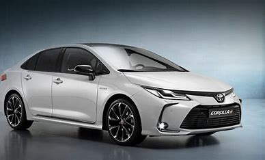
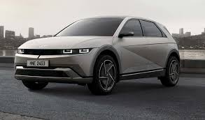

2024 Toyota Corolla
Price: $23,000
Moteur : La Corolla 2024 est équipée d'un moteur 2.0L 4 cylindres en ligne, produisant 169 chevaux.
Transmission : Transmission automatique à variation continue (CVT).
Consommation de Carburant : Environ 35 MPG combiné (32 MPG en ville et 41 MPG sur autoroute).

2024 Honda Civic
Price: $25,000
Moteur : Disponible avec un moteur 2.0L 4 cylindres en ligne produisant 158 chevaux, ou un moteur 1.5L turbo produisant 180 chevaux.
Transmission : Transmission automatique à variation continue (CVT) avec palettes de changement de vitesse disponibles sur certaines versions.
Consommation de Carburant : Environ 33 MPG combiné (30 MPG en ville et 37 MPG sur autoroute) pour le moteur 2.0L, et jusqu'à 36 MPG combiné (33 MPG en ville et 42 MPG sur autoroute) pour le moteur 1.5L turbo2.

2024 Hyundai Elantra
Price: $22,000
Moteur : Disponible avec un moteur 2.0L 4 cylindres en ligne produisant 147 chevaux, ou un moteur 1.6L turbo produisant 201 chevaux.
Transmission : Transmission automatique à variation continue (CVT) ou transmission manuelle à 6 vitesses sur certaines versions.
Consommation de Carburant : Environ 34 MPG combiné (31 MPG en ville et 40 MPG sur autoroute) pour le moteur 2.0L.

2024 Mercedes-Benz S-class
Price: $22,000
Moteurs : Disponible avec plusieurs options de moteurs, y compris :
Moteur 3.0L 6 cylindres en ligne avec hybridation légère, produisant 429 chevaux.
Moteur 4.0L V8 biturbo avec hybridation légère, produisant 496 chevaux.
Version AMG avec moteur 4.0L V8 biturbo hybride rechargeable, produisant 603 chevaux.
Transmission : Transmission automatique à 9 vitesses (9G-TRONIC).
Consommation de Carburant : Environ 21 MPG combiné (18 MPG en ville et 26 MPG sur autoroute).

2024 BMW 7 Series
Price: $116,000
Moteurs : Disponible avec plusieurs options de moteurs, y compris :
Moteur 3.0L 6 cylindres en ligne avec hybridation légère, produisant 375 chevaux.
Moteur 4.4L V8 biturbo avec hybridation légère, produisant 536 chevaux.
Version hybride rechargeable avec moteur 3.0L 6 cylindres en ligne et moteur électrique, produisant 449 chevaux.
Transmission : Transmission automatique à 8 vitesses (8G-TRONIC).
Consommation de Carburant : Environ 20 MPG combiné (18 MPG en ville et 25 MPG sur autoroute).

2024 Rolls Royce
Price: $300,000
Moteur : Moteur V12 6,75 litres turbo produisant 563 chevaux pour la version de base, et 591 chevaux pour la version Black Badge.
Transmission : Transmission automatique à 8 rapports.
Consommation de Carburant : Environ 16,7 L/100 km en cycle combiné.
Rouage : Intégral (4 roues motrices).

2024 Toyota RAV 4
Price: $28,000
Moteur : Moteur V12 6,75 litres turbo produisant 563 chevaux pour la version de base, et 591 chevaux pour la version Black Badge.
Transmission : Transmission automatique à 8 rapports.
Consommation de Carburant : Environ 16,7 L/100 km en cycle combiné.
Rouage : Intégral (4 roues motrices).

2024 Range Rover Sport
Price: $83,000
Moteurs : Disponible avec plusieurs options de moteurs, y compris :
Moteur 3.0L 6 cylindres en ligne avec hybridation légère, produisant 355 chevaux.
Moteur 4.4L V8 biturbo, produisant 523 chevaux.
Version hybride rechargeable avec moteur 3.0L 6 cylindres en ligne et moteur électrique, produisant 434 chevaux.
Transmission : Transmission automatique à 8 rapports.
Consommation de Carburant : Environ 10,7 L/100 km en cycle combiné pour la version essence.

2024 Mercedes Maybach 600
Price: $185,000
Moteur : Moteur V12 6,0 litres biturbo produisant 621 chevaux.
Transmission : Transmission automatique à 9 vitesses (9G-TRONIC).
Consommation de Carburant : Environ 15 MPG combiné (12 MPG en ville et 20 MPG sur autoroute).
Rouage : Intégral (4 roues motrices).

2024 Porsche 911
Price: $120,000
Moteurs : Disponible avec plusieurs options de moteurs, y compris :
Moteur 3.0L 6 cylindres à plat biturbo produisant 379 chevaux pour la Carrera.
Moteur 3.0L 6 cylindres à plat biturbo produisant 443 chevaux pour la Carrera S.
Moteur 3.8L 6 cylindres à plat biturbo produisant 640 chevaux pour la Turbo S.
Transmission : Transmission automatique à 8 vitesses (PDK) ou transmission manuelle à 7 vitesses pour certaines versions.
Consommation de Carburant : Environ 11,6 L/100 km en cycle combiné pour la Carrera

2024 Chevrolet Corvette
Price: $70,000
Moteurs : Disponible avec plusieurs options de moteurs, y compris :
Moteur 6.2L V8 produisant 490 chevaux pour la version Stingray.
Moteur 5.5L V8 produisant 670 chevaux pour la version Z06.
Version hybride E-Ray avec moteur 6.2L V8 et moteur électrique, produisant 655 chevaux.
Transmission : Transmission automatique à 8 vitesses (DCT).
Consommation de Carburant : Environ 19 MPG combiné (16 MPG en ville et 25 MPG sur autoroute) pour la version Stingray

2024 Audi TT RS
Price: $73,000
Moteur : Moteur 2.5L 5 cylindres turbo produisant 400 chevaux.
Transmission : Transmission automatique à 7 vitesses (S tronic).
Consommation de Carburant : Environ 8,5 L/100 km en cycle combiné.
Rouage : Intégral (quattro).

2024 Tesla Model 3
Price: $75,000
Autonomie: Jusqu'à 363 miles (EPA estimé) avec une seule charge.
Accélération: Rapide, avec des versions Performance capables de passer de 0 à 60 mph en environ 3,1 secondes.
Recharge: Recharge rapide avec les Superchargeurs Tesla, permettant de récupérer jusqu'à 195 miles en 15 minutes.

2024 Kia EV6
Price: $45,000
Autonomie : Jusqu'à 310 miles (EPA estimé) avec une seule charge.
Accélération : La version GT peut passer de 0 à 60 mph en 3,4 secondes.
Recharge : Recharge rapide avec des chargeurs DC, permettant de passer de 10% à 80% en 18 minutes

2024 Hyundai Ioniq 5
Price: $42,000
Autonomie : Jusqu'à 303 miles (EPA estimé) avec une seule charge.
Accélération : La version N peut passer de 0 à 60 mph en 3,0 secondes.
Recharge : Recharge rapide avec des chargeurs DC, permettant de passer de 10% à 80% en environ 18 minutes.